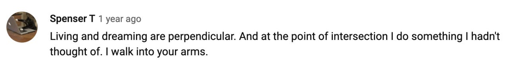

Colophon
-
penundaan, oleh toeti heraty
suatu saat kota baja dengan dinding
dinding logika akan menyerah
-
catatan malam, oleh wiji thukul
cinta menuntun kami ke masa depan
-
molly brodak
A heart swamped in contradiction is true. Knowing something for sure, feeling it for certain, is just a story. I fought so hard against these pointed forces, all at odds with one clear story, for so long, until it let me give up. It had to happen that way, so I could see it right, to see that I could live in paradox, and that it was true. Something true will not let you control it.

-
a paraphrased version of Alice Notley’s poem-lecture the poetry of everyday life

- wishful self portrait i & ii (2020) by sian costello